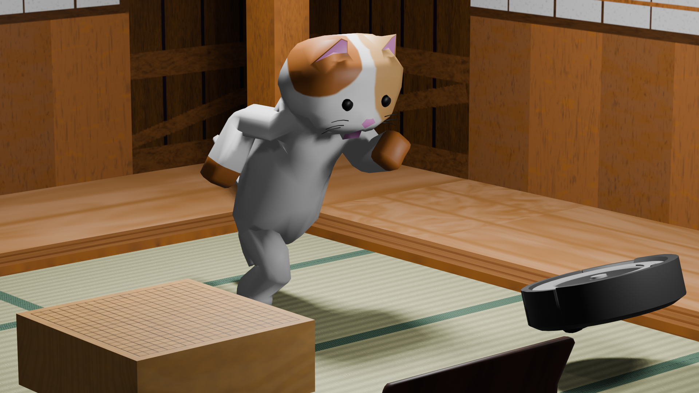
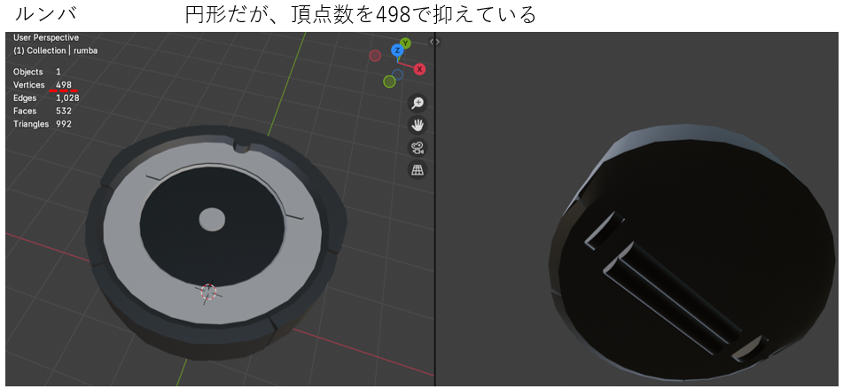
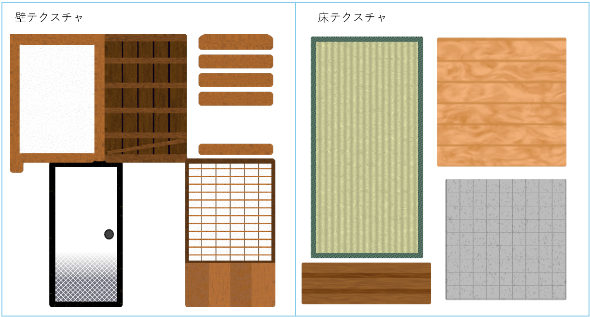
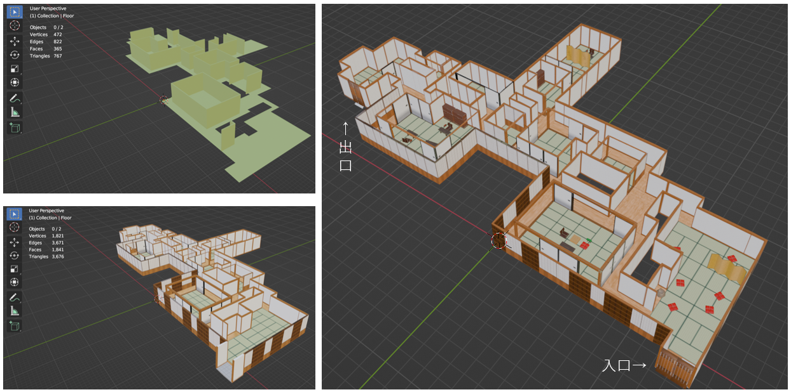

せまるねこ にげるねこ
14名の大規模チームを立て直し、実働3週間で完成させた和風3D探索ゲーム

1. プロジェクト概要
1-1. ゲーム内容
ゲーム制作サークルの定期イベント「冬チーム」にて制作した3Dアクションゲームです。日本屋敷を舞台に、主人公の「猫」が敵（お化け）の追跡を避けながら、マップ内に配置されたお宝を回収して出口を目指す探索ゲームとなっています。

1-2. 作品アクセス
作品は UnityRoom にて公開されています
※非常に操作に癖があり、また操作説明も少なく、サイズ調整のない画面も存在しています。
2. 3DCG制作における技術的な工夫
2-1. 厳格なポリゴン数制限と量産体制の構築
3D制作担当班において、アイテム15種や家具8種、キャラクター2種、ステージ1つを短期間で制作する必要がありました。
そのため班全体においてアイテムは500頂点、キャラクターは1000頂点までという厳格なローポリゴン制限を設けました。
これにより、製作期間の短縮、ディテールの不均一化の防止、画面内に大量のオブジェクトを配置しても負荷がかからないアセット制作を実現しました。

2-2. プロシージャルシェーディングによる和風表現

日本屋敷の表現において、木目や座布団の布地感、襖の模様などをプロシージャルなノードベースのシェーディングで作成しました。
テクスチャの解像度に依存しない高品質な表現と、バリエーションの効率的な量産を両立させるほか、ややローポリゴンな世界観に合わせるためテクスチャはそれぞれ独自に作成しています。
2-3. キャラクターの作成とモーションの導入
プレイヤーが操作するキャラクターのモデリングおよび、ループアニメーション（歩行・走行など）の作成を担当しました。
担当プログラマと綿密に連携し、必要なモーションの種類や遷移時間を確認しながら実装を進めています。
開発途中の仕様変更により一人称視点となったため、キャラクター自身が直接画面に映ることはなくなりましたが、プレイヤーの視界に映り込む「影のモーション」として、ゲームのリアリティと没入感の向上に寄与しています。

2-4. ステージの制作と最適化
担当メンバーの急な欠員により、急遽ステージ全体のモデリング作業を巻き取ることになりました。
実物の「御殿」の構造をベースに、壁や襖を制作側で配置して部屋と廊下を構築しました。開発期間が逼迫していたため、プログラマ側でアセットを組み立てる工程を省けるよう、こちらでステージ全体を一体成型して渡す判断を下しました。
また、ローポリゴンかつトゥーン調の世界観に合わせ、床や壁のテクスチャをそれぞれ1枚にまとめ(それぞれ班員と私で作成)、手作業でUV展開を行うことで最適化とクオリティの担保を図っています。

↓ステージの概観

↓ステージ全体が完成した際に作成したムービー

2-5. プログラマと連携したレベルデザインと不具合回避
敵AI（お化け）の経路探索において、「壁と床が同一であり、壁を上り、時に走ってしまう」という実装上の不具合が発生する可能性がありました。
これを防ぐため、ステージの壁と床のモデルをプログラムの要件に合わせて分離し、個別のコライダーを設定しやすい構造へと最適化を行いました。
3. 大規模チームの危機に対するマネジメントの軌跡
本プロジェクトは、初期段階で企画が破綻しかけるという大きな危機に直面しました。
私は本来3D担当でしたが、実質的なディレクター・PMとしてチームを立て直すべく、以下のプロセスで課題解決に取り組みました。
3-1. 状況観察と課題の特定（傍観から介入へ）
開発初期、チームは上級生プランナー主導で動いていましたが、会議の方向性が定まらず、メンバー間に「このゲームは面白くならない」という諦めが蔓延していました。
私は当初静観していましたが、企画会議に居残っていた下級生の「良いものを作りたい」という言葉を耳にし、企画の抜本的な再構築を決意しました。
3-2. 企画の再定義と命令系統の再構築（介入フェーズ）
企画を白紙に戻すための事前調整（根回し）や新たな選定手法の検討を行い、メンバーのやりたい「要素」と「理由」から逆算する独自の企画フォーマットを導入しました。属人性を排除することで、カオスな状態から迅速な合意形成を実現しています。
さらに、実働3週間という制約の中で14名の大所帯を機能させるため、私が全タスクを管理するのではなく、各部門にチーフを立てる形で命令系統を構築しました。私は各チーフに対し、期間内に完了できる規模感へのタスク分割をアドバイス・監督する立場に回り、以後は各部門が自律的に報告・相談を行いながら制作を進められる体制の構築に注力しました。
3-3. プレイングマネージャーとしての限界と教訓（属人的マネジメントからの脱却）
各部門の自律的な稼働を促したものの、開発終盤にかけて情報伝達の漏れやコミュニケーションの不和が重なり、チーム全体のモチベーションが低下する事態が発生しました。3Dチームを除きタスク管理用のスプレッドシートが形骸化するなど施策も機能せず、そこにメンバーの離脱が重なり、欠員カバーのために私自身が徹夜でステージ制作などの実作業を巻き取る状況に陥りました。
連日の会議の沈滞や進行の遅れに対し、私自身も実務とマネジメントの両立で余裕を失い、「個人の力技や熱量でプロジェクトを牽引する」ことの限界（燃え尽き）を痛感しました。
個人としては燃え尽きる形となりましたが、泥臭く進行を支え続けたことで制作完了までには漕ぎ着けることに成功し、無事にゲームを稼働・発表を行い、プロジェクトを完遂しました。
この苦い経験から、「どれほど企画や個人のスキルがあっても、運用ルールの徹底やコミュニケーションの心理的安全性といった『組織の土台』が機能しなければチームは簡単に立ち行かなくなる」という、実務におけるマネジメントのシビアな教訓を深く心に刻みました。
プロジェクトの軌跡と反省/学びについて
プロジェクト全体が終了した直後の振り返りを公開記事向けに内容を改変してまとめました。
全体の具体的な流れや学びをまとめています。